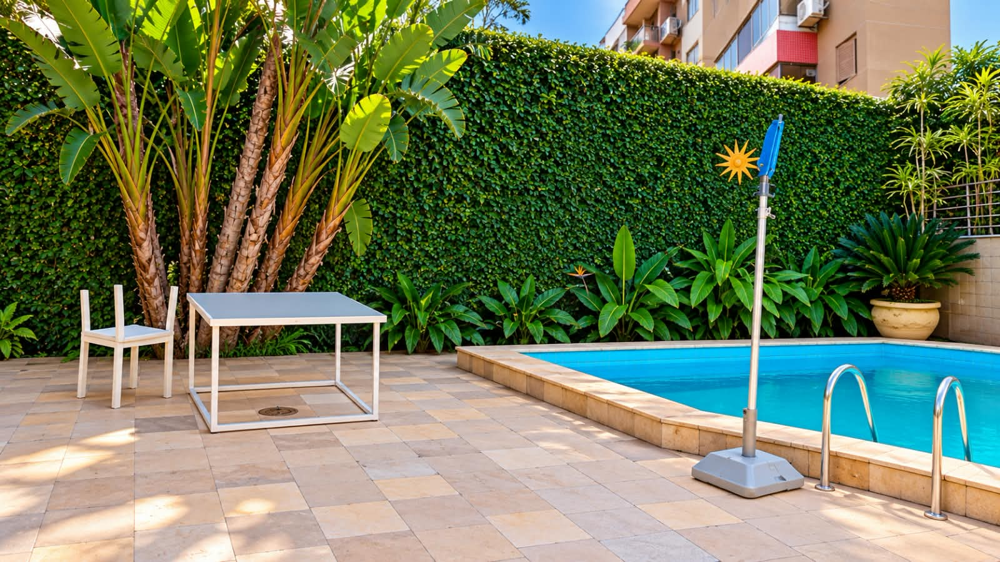
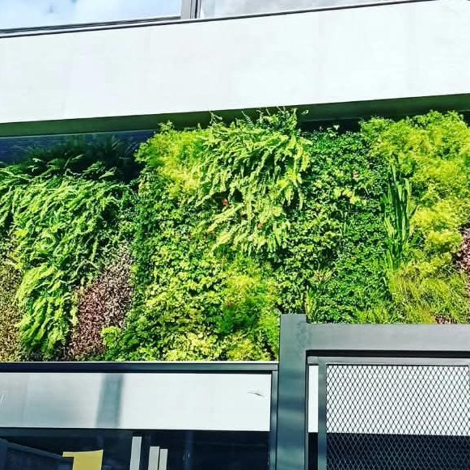
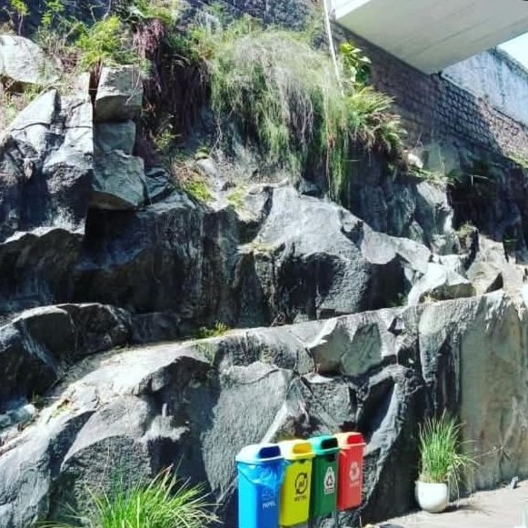
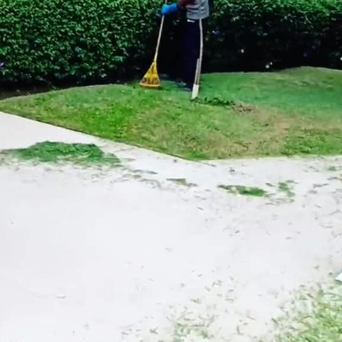
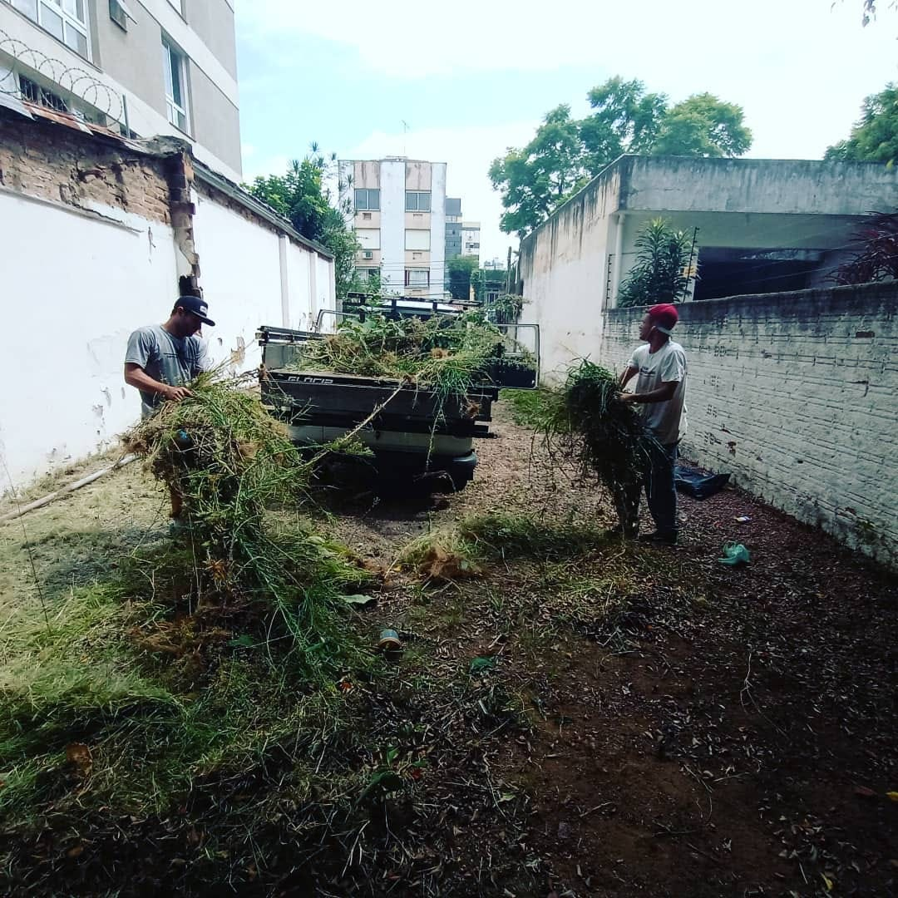
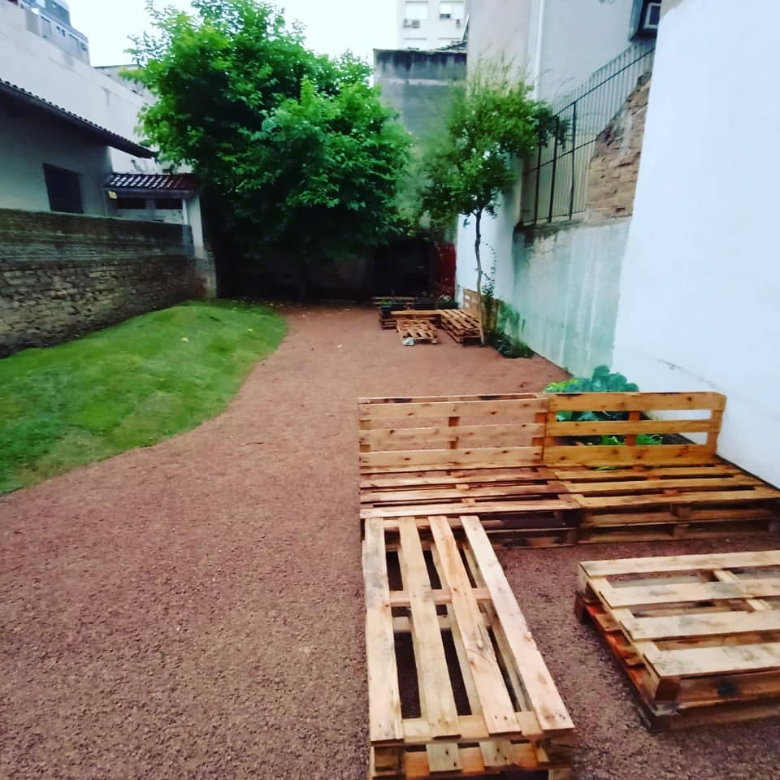
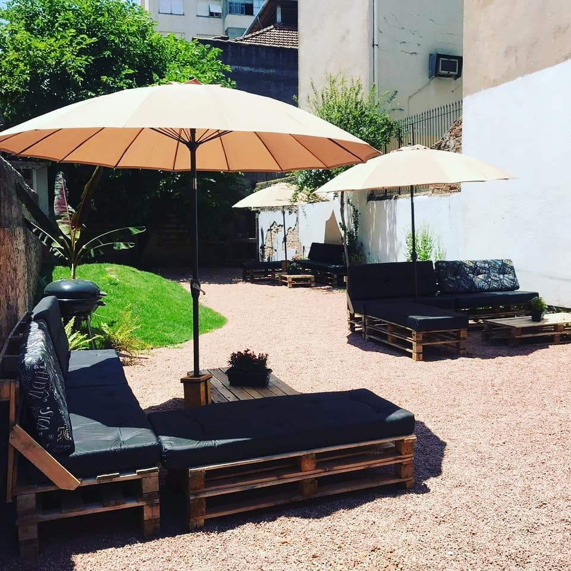

Projeto paisagístico
Projetos personalizados, com escolha das espécies, canteiros e caminhos.

Paisagismo e manutenção de jardins
Projetos paisagísticos, jardim vertical, design de pedras e manutenção de jardins em Porto Alegre, desde 2008.
Sobre nós
Atuamos desde 2008 em arquitetura e urbanismo, com projetos personalizados que unem conforto, funcionalidade e estética de acordo com as necessidades de cada cliente.
Trabalhamos com uma rede colaborativa de equipes especializadas em paisagismo, manutenção de jardins e projetos, sempre com dedicação, responsabilidade e respeito ao cliente.
Projetos em todas as áreas da arquitetura e do urbanismo.
Uma rede colaborativa para paisagismo, manutenção e projetos.
Conforto, funcionalidade e estética pensados para cada espaço.
Para casas, condomínios, comércios e áreas de lazer em Porto Alegre.
Projetos personalizados, com escolha das espécies, canteiros e caminhos.

Paredes verdes para fachadas e ambientes internos e externos.

Pedras em ambientes internos e externos, de muros a canteiros.

Corte de grama, poda, adubação e limpeza periódica.
Replantio, novos canteiros e acabamentos para renovar o jardim que você já tem.
Limpeza do terreno, preparo do solo, plantio de grama e piso de pedrisco.
Um dos nossos trabalhos, registrado em três etapas.



Jardins, pedras, gramados e canteiros feitos pela Nature. Toque em uma foto para ampliar.
Depoimentos gravados por clientes da Nature.
“O pátio dos fundos estava tomado pelo mato. Hoje é o lugar preferido da família para o churrasco de domingo.”
“Fizeram o jardim vertical da entrada do prédio. Ficou bonito e continua verde, com a manutenção em dia.”
“Contratamos a manutenção mensal do jardim do condomínio. Grama sempre cortada e canteiros bem cuidados.”
Preencha o formulário e a mensagem chega pronta no nosso WhatsApp. Se puder, mande fotos do local na conversa.
Dúvidas frequentes
Não achou sua resposta? Fale com a gente pelo WhatsApp.
Mande fotos e as medidas aproximadas do espaço pelo WhatsApp. Para projetos maiores, combinamos uma visita para avaliar o local.
Sim. Fazemos corte de grama, poda, adubação e limpeza em visitas avulsas ou periódicas. Também reformamos jardins que precisam de renovação.
Sim. Executamos jardins verticais em áreas internas e externas, com plantas escolhidas de acordo com a luz do local.
Sim. Fazemos design de pedras para ambientes internos e externos: muros, canteiros, caminhos e acabamentos.
Sim. Atendemos casas, condomínios, comércios e áreas de lazer.
Na Rua Casemiro de Abreu, 707, bairro Rio Branco, em Porto Alegre - RS (CEP 90420-001).